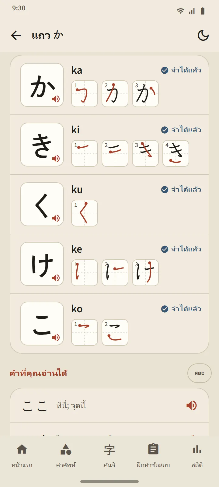
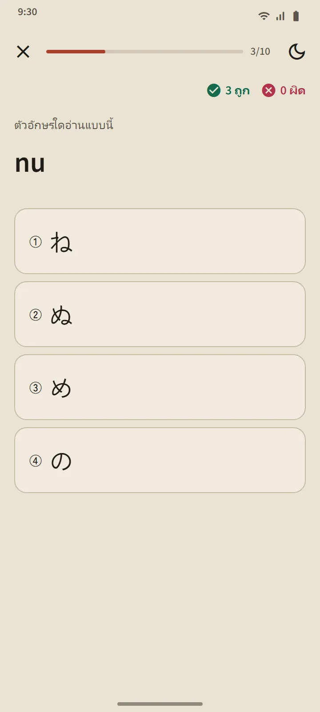

ตารางที่เป็นรายการบทเรียนในตัว
หน้าฮิรางานะและคาตาคานะเปิดได้จากส่วน “พื้นฐานภาษาญี่ปุ่น” ของหน้าแรก การ์ดสรุปด้านบนนับตัวอักษรที่คุณจำได้แล้ว ตารางด้านล่างแบ่งเป็นสามกลุ่ม: พื้นฐาน (46 ตัว) เสียงขุ่นและกึ่งขุ่น (ดะคุเต็นและฮันดะคุเต็น) และ เสียงควบ (きゃ, しゅ, ちょ และอื่น ๆ) ช่องที่เติมสีหมายถึงจำได้แล้ว ช่องที่มีเส้นขอบหมายถึงกำลังเรียน
หนึ่งแถวหนึ่งบทเรียน
แต่ละแถวในตารางคือหนึ่งบทเรียน: ช่องตัวอักษรที่แตะเพื่อฟังเสียง โรมาจิ เครื่องหมายว่าจำได้แล้ว ลำดับขีดของทุกตัวอักษร และ “คำที่คุณอ่านได้”: คำจริงจากพจนานุกรมที่ประกอบจากตัวอักษรที่เรียนมาถึงแถวนั้นเท่านั้น โดยโรมาจิซ่อนอยู่หลังปุ่มเพื่อให้คุณลองอ่านก่อน ปุ่ม “ทดสอบแถวนี้” ปิดท้ายบทเรียน

กฎการอ่าน
กลุ่มสุดท้ายของแต่ละตารางอธิบายกฎที่ผู้เริ่มต้นมักสะดุด: っ ตัวเล็กและสระเสียงยาวในฮิรางานะ และในคาตาคานะคือเครื่องหมายเสียงยาว ー, ッ ตัวเล็ก และการรวมเสียงของคำยืม (ファ, ティ, ウィ) แต่ละกฎมีคำตัวอย่างที่คุณอ่านได้
แบบทดสอบ 10 ข้อ ไม่มีการจัดตารางทบทวนใหม่
แบบทดสอบคานะมีคำถามสามแบบ: จากตัวอักษรเป็นโรมาจิ จากโรมาจิเป็นตัวอักษร และจากเสียงเป็นตัวอักษร ตัวอักษรจะเป็น จำได้แล้ว หลังตอบถูกติดต่อกันสามครั้ง และถอยกลับไปเป็นกำลังเรียนเมื่อตอบผิด ต่างจากคำศัพท์และคันจิ ตัวอักษรไม่ถูกจัดตารางทบทวนใหม่: เมื่ออ่านได้ครบทุกตัว ตารางก็เสร็จสิ้น สรุปแบบทดสอบแสดงคะแนน ตัวอักษรที่เพิ่งจำได้ และตัวที่ตอบพลาด

เริ่มจากตรงไหน
เมื่อเปิดแอปครั้งแรก แอปจะถามว่าคุณเริ่มจากศูนย์หรืออ่านฮิรางานะได้แล้ว คำตอบของคุณจะกำหนดคำแนะนำหนึ่งข้อในหน้าแรก: "เริ่มด้วยฮิรางานะ" สำหรับผู้เริ่มต้น และคำศัพท์ 20 คำแรกสำหรับคนอื่นๆ ไม่มีรายการที่ต้องทำให้ครบ: การ์ดเดียวกันมีลิงก์ไปยังบทแนะนำสั้นๆ ของทุกฟีเจอร์ และปิดได้ทุกเมื่อ